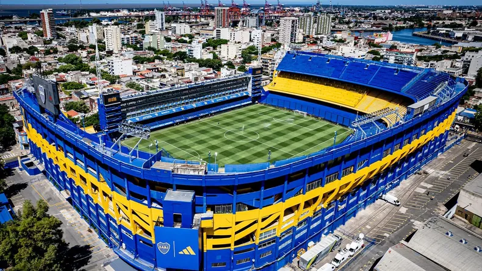

Estadio
La Bombonera
La Bombonera es uno de los estadios de fútbol más emblemáticos y reconocidos en el mundo. Está ubicado en el barrio de La Boca, en Buenos Aires, Argentina, y es el estadio del Club Atlético Boca Juniors, uno de los clubes de fútbol más populares y exitosos de Argentina y de Sudamérica.
Historia
La historia de La Bombonera se remonta a 1938 cuando se inauguró el estadio. El nombre oficial del estadio es "Estadio Alberto J. Armando", en honor a un expresidente del club, aunque es conocido popularmente como La Bombonera debido a su forma similar a una caja de bombones.
Diseño y Arquitectura
La característica más distintiva de La Bombonera es su forma de herradura y sus gradas empinadas, que permiten una vista espectacular de la cancha desde prácticamente cualquier asiento. El estadio tiene una capacidad para alrededor de 59,000 espectadores. En el extremo sur del estadio se encuentra la famosa "popular", una sección de gradas donde los fanáticos más apasionados y ruidosos, conocidos como "La 12", se congregan para alentar al equipo. Esta es una de las zonas más emblemáticas de La Bombonera.
Ambiente y Pasión
El estadio es conocido por su ambiente eléctrico y apasionado. Los hinchas de Boca Juniors son famosos por su pasión y su capacidad para crear un ambiente intimidante para los equipos visitantes. Los cánticos, banderas y la pirotecnia son elementos comunes en los partidos de Boca, lo que contribuye a la atmósfera única de La Bombonera.
Eventos Importantes
La Bombonera ha sido sede de numerosos eventos futbolísticos importantes a lo largo de su historia, incluyendo partidos de la selección argentina y partidos de la Copa Libertadores, el torneo de clubes más prestigioso de América del Sur. Algunos de los momentos más memorables en la historia del estadio incluyen la final de la Copa Libertadores 2000, cuando Boca Juniors derrotó al Palmeiras, y la final de la Copa Libertadores 2018, cuando el partido se suspendió debido a incidentes y se jugó en el estadio Santiago Bernabéu en Madrid, España.
Museo y Tours
La Bombonera cuenta con un museo que exhibe la historia y los logros del club, así como una tienda de souvenirs donde los aficionados pueden adquirir productos relacionados con Boca Juniors. También es posible realizar tours por el estadio para conocer más sobre su historia y disfrutar de vistas panorámicas desde las gradas.
Significado Cultural
La Bombonera es un símbolo del fútbol argentino y de la identidad de Boca Juniors. Ha sido tema de canciones, películas y obras de arte que destacan su importancia cultural y deportiva en Argentina y más allá.